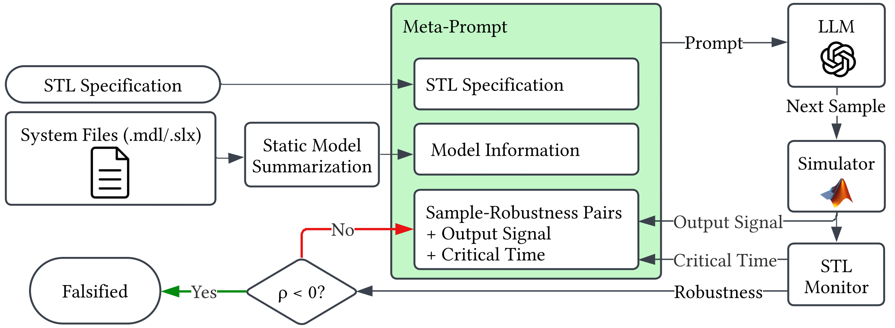

Abstract
Falsification searches for counterexamples to formal specifications in cyber-physical systems (CPS). With specifications written in Signal Temporal Logic (STL), falsification can be formulated as a robustness optimization problem, traditionally tackled with black-box search algorithms. In parallel, large language models (LLMs) have recently emerged as surprisingly effective optimizers when coupled with iterative prompting. In this work, we connect these ideas and introduce LLM-Falsifier, an LLM-based approach that falsifies specifications by minimizing the STL robustness degree.
Beyond generic prompt-based optimization, our key idea is to expose the LLM to semantic information that is natural for language models but absent from standard numerical optimizers, including natural-language input and output names, output trajectories, and critical-time witnesses for the minimum robustness value. These additions enable smarter and more sample-efficient robustness search. On the ARCH-COMP falsification benchmarks, LLM-Falsifier is shown to outperform existing falsification tools based on a range of optimization paradigms, from surrogate-based and Bayesian optimization to search-based testing, on 14 of 21 specifications when measured by the average number of simulations required to find a counterexample.
How it works
Given an STL specification and the system files, a static model summarization step extracts model information such as input and output signal names and fills in a meta-prompt. The LLM proposes the next sample, a simulator runs it, and an STL monitor computes the robustness value ρ together with its critical time. If ρ < 0 a counterexample has been found; otherwise the sample, its robustness, and the associated output-signal and critical-time information are appended to the prompt, and the loop repeats.
Unlike generic optimization-by-prompting, the loop starts without any initial samples, requests a single sample per iteration, and performs no external ranking or selection among candidates — every candidate costs a full simulation. What makes the difference is what the model gets to see:
- Natural-language signal names. Input and output names extracted from the Simulink model, so the LLM can reason about throttle and brake rather than x₁ and x₂.
- Output trajectories. Output signal values over time, not just a single scalar score per sample.
- Critical-time witnesses. The time point at which the final robustness value is sensitive to changes in the signal, which tells the model where in the trajectory to push.
Results
We evaluate on the ARCH-COMP 2025 falsification benchmarks — Automatic Transmission, Chasing Cars, Neural Network controller, F16 Ground Collision Avoidance, and Steam Condenser — and compare against tools spanning surrogate-based optimization, Bayesian optimization, and search-based testing. Sample efficiency, the number of candidate inputs simulated before a counterexample is found, is the primary cost measure, since every sample requires an expensive simulation.
Falsifying a specification on the very first simulation is essentially impossible for a purely numerical
optimizer, which has no information before its first sample. The paper also studies the effect of the
underlying model and reasoning effort — including an open-source model, gpt-oss-20b, run
locally — and inspects the LLM's reasoning traces to understand how it constructs falsifying inputs.
Getting started
LLM-Falsifier is built on top of Ψ-TaLiRo. It needs Python 3.9, uv, and MATLAB R2022a with Simulink.
git clone https://github.com/aliabigdeli/llm-falsifier.git
cd llm-falsifier
uv sync
# add your OpenAI key (or point at a local LM-Studio server instead)
echo "sk-your-openai-api-key-here" > api_key.txt
cd archcomp
uv run autotrans_all_specs.py \
--spec AT1 --optimizer LLMGB --seed 1 \
--llm-model gpt-5-nano --reasoning-effort low \
--max-budget 100 --output-time-selection 6 --include-critical-timeFull benchmark list, specifications, and command-line options are documented in the benchmark README.
BibTeX
@misc{arjomandbigdeli2026llmfalsifier,
title = {Large Language Models as Falsifiers for Cyber-Physical Systems},
author = {ArjomandBigdeli, Ali and Zhou, Jiawei and Bak, Stanley},
year = {2026},
eprint = {2609.20752},
archivePrefix = {arXiv},
primaryClass = {eess.SY},
url = {https://arxiv.org/abs/2609.20752}
}Acknowledgments
This material is based upon work supported by the National Science Foundation under Award No. 2237229 and 2448869.